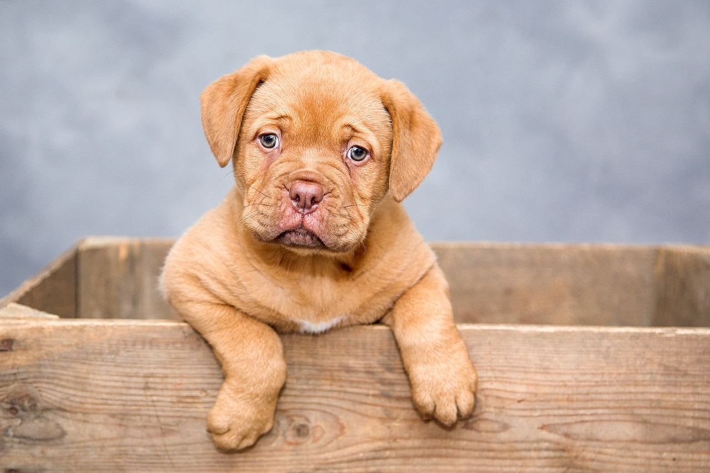
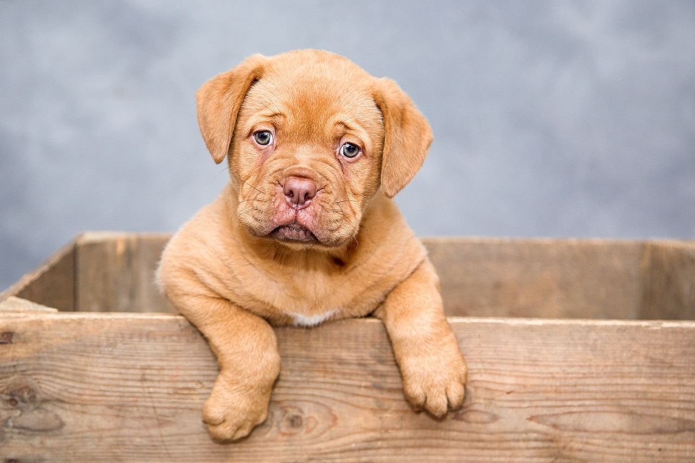
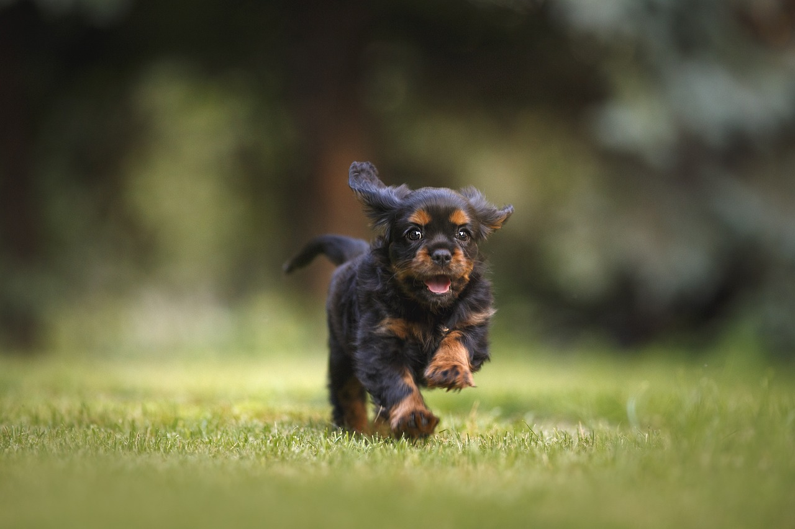
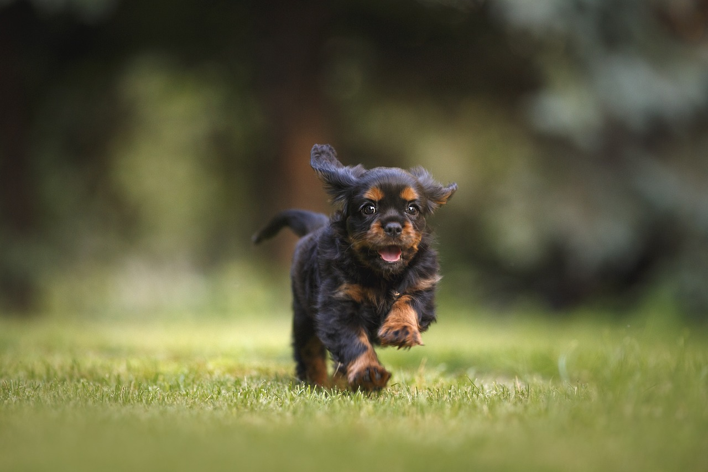

Adote-me
Adote-me 
"Um olhar que pede um lar, um coração que merece amor."
Sobre Nós
A "Adote-me" é uma organização dedicada a encontrar lares amorosos para animais que precisam de uma segunda chance. Acreditamos que cada pet merece um lar feliz e seguro.
Nossa Missão
- Resgatar e reabilitar animais em situação de vulnerabilidade.
- Conectar pets incríveis com famílias que buscam um companheiro.
- Promover a adoção responsável e o bem-estar animal.
Nossos Valores
- Amor e respeito por todos os animais.
- Transparência e responsabilidade em nossas ações.
- Compromisso com o bem-estar animal.
Junte-se a nós nessa missão de amor e cuidado com os animais!


 

 
